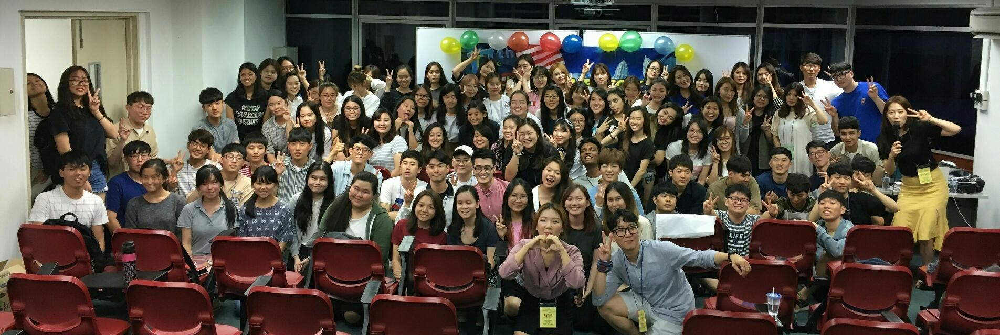

일정/Schedule
ESC의 시작
나는 내 영어 실력을 바탕으로 반 배정을 받았다.
나는 이제 말레이시아에서 한 달동안 영어로 발표도 하고 프로젝트도 수행해야 한다.
나는 사실 처음부터 외국인 친구들을 만날 생각으로 교환학생 프로그램에 지원한 것이기 때문에 다른 프로그램보다도 버디 프로그램이 가장 기대됐다. 사실 말레이시아를 선택한 가장 큰 이유도 이 버디 프로그램 때문인데 이 프로그램은 한국 학생과 말레이시아 학생을 1:1로 매칭 시켜서 문화 교류 및 친목도모를 활성화 시키는 것이 목적이었다. 영어 회화에 항상 갈증을 느끼던 나에게 딱 맞는 프로그램이 아닌가!
BUDDY; Sharon, Milvert and committee
내 버디는 말레이시아 남자애 밀버트였다. 밀버트는 배정을 받고 나서 첫 일주일은 거의 연락도 안되는 애였다. 그러니 어떤 애인지도 모르고 내 소중한 일주일이 날아가고 있었다. 나중에 얘기를 들어보니 매우 바빴던 시기여서 연락이 잘 안 닿았던거였지만.
그래서 첫 일주일동안 버디를 관리하는 친구들과 친해졌다.

사진은 처음으로 커미티 친구들과 딤섬을 먹으러 간 날이다. 이 날 빈스, 오드리, 시슈엔과 친해졌다. 내가 이 친구들을 만나고 느낀건 굉장히 친해지기 쉬운 스타일이라는 것! 같이 이야기 하면 편하고 재미있는 친구들이었다. 그리고 다들 섬세하고 잘 챙겨줘서 같이 놀러 다니는게 재미있었다.
그리고 여기서 내 인생에서 가장 소중한 인연 중 하나인 샤론을 만난다. 샤론은 'buddy committee'의 일원으로 버디와 아직 만나지 못한 나를 데리고 여기 저기 구경을 시켜줬다. 샤론과 나는 첫 만남부터 잘 맞을 것이라는 느낌이 왔고 아주 정확히 만난 첫 날부터 우리는 친구가 되었다.

그리고 일주일 후 밀버트와 연락이 닿았다.

밀버트는 당시 신입생이었고 글로벌 경영이 전공이었다. 첫 인상은 안 좋았지만 정말 순수한 친구라는 게 느껴졌다. 그래서 밀버트와도 정말 자주 만났다.
한 달 지내는 동안 첫 주 빼고는 정말 빽빽하게 약속이 잡혀있어서 정말 바쁘게 시간을 보냈다. 정규 수업이 끝나고 하루도 빠짐 없이 친구들을 만나서 쿠알라룸프르 이 곳 저 곳을 구경했다. 한 달동안 정말 한 곳도 빠짐없이 다 가봤던 것 같다.
수업

수업 일정은 생각보다 빡빡했다.
매일 아침 여덟시부터 정오나 오후 한시까지 수업을 진행했고 오후에는 말레이시아 문화와 관련된 문화 수업도 진행되었다.
그리고 수업이 끝나고는 무조건 버디들을 만났으니 내 일정은 오전 7시에 시작해서 그 다음날 새벽 한시가 되어서야 끝이났다. 이러한 생활을 한 달동한 하고 나니 살이 무척 빠져있었다.
사실 수업은 어려운 점이 전혀 없었다. 한 달간 총 세 번의 발표를 하는데 두 번은 나 자신, 우리나라와 관련된 발표를 하고 한 번은 말레에시아와 관련된 발표를 해야 했다. 나는 나를 드러내는 데에 전혀 어려움을 느끼지 못했기 때문에 나에 관련한 것들은 대본도 쉽게 외우고 발표자료를 준비하는 데도 어려움을 느끼지 못했다.

그런데
문제는 말레이시아와 관련한 발표를 하는 것이었다. 경제 관련 용어도 너무 어렵고 피피티도 내가 만들지 않아서 전혀 눈에 익숙해지지 않았다. 또 조별 프로젝트였기 때문에 다른 조원들과 의견을 조율하는 것도 내가 배워나가야 할 것 중 하나였다.